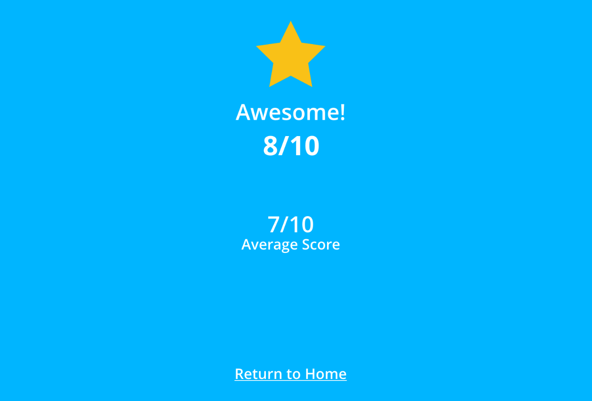

Go back
3: A minimum viable product
Hang in there! Actually, we would like to present this app to the
Chief Technology Officer, but perhaps we can add a cool reporting feature.
When a user finishes a Quiz, let’s score it and compare it agains all the other registered attemps.
Objective
- Show the results of the quiz after the user answers all the questions in it
/client

-
After finishing a Quiz, the user needs to be redirected to a results view,
showing the score of the current try of the quiz and a comparation of it
against all the other attempts made.
/backend
- Provide logic for quiz attempt.
- Once again, we have already set up the tests for you. Please run the test
suite using
bundle exec rspec --tag level=three and do your
best to cover all the specs.
Once you finish, please remember to commit && push to your branch.